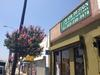
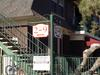
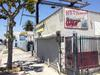

Business
-
South LA coffee shop closes its doors, but might be back
9/5/12, 4:01 p.m.
The lackluster financial performance of Primera Taza's Central Avenue location forced its shutdown, effective September 1.
-
6 southside storefronts getting a facade-lift
7/25/12, 2:58 p.m.
The Central Avenue Beautification Project has an eye on both boosting the area's economic development and community pride.
-
South LA dispensary manager: When pot shop ban comes down, crime will go up
7/25/12, 11:14 a.m.
The manager of a South L.A. medical marijuana dispensary says the city's pending ban on the retail of medical pot will leave patients in the lurch.
-
Southside bar makes local students its priority
6/18/12, 2:19 p.m.
After a change in ownership, the 2-9 Café is reinventing itself in attempt to monopolize the USC student market.
-
Central Avenue signage leaves a lot to be desired
6/6/12, 4:04 p.m.
Most of the signs on the southside are peeling, graffitied, dirty, faded and/or grammatically incorrect – and that's not good for "curb appeal."
-
Crossing borders: Fulfilling the dry cleaning dream
5/23/12, 3:43 p.m.
Candido began working in the dry cleaning industry when he was living in Mexico. After working for other employers in Los Angeles, his dream was finally realized.
-
South LA Snapshot: Local business employee
4/13/12, 10:03 a.m.
In OnCentral's "South L.A. Snapshot" series, OnCentral provides you with a glimpse into the lives of everyday women and men in South Los Angeles. This time, we talked to a local business employee.
-
South LA Snapshot: Barber
4/11/12, 5 p.m.
In OnCentral's "South L.A. Snapshot" series, OnCentral provides you with a glimpse into the lives of everyday women and men in South Los Angeles. This time, we talked to a barber.
-
Where's the Wi-Fi in South L.A.?
2/10/12, 2:12 p.m.
Don't have the Internet at home? Check out our map of South L.A.'s free Wi-Fi hotspots.
-
'¿Credito, debito ó cash?'
1/26/12, 11:17 p.m.
Non-Latino business owners in South L.A. adapt to a language barrier to cater to clientele relations and gain revenue.
About Us
OnCentral is a site for the neighborhoods around Central Avenue. It's a news site where we not only provide information, but put the power of storytelling in your hands. Sign up and you can share your story or help an existing story grow by adding in your perspective or corrections.
Follow OnCentral


- Most Viewed
- Most Commented